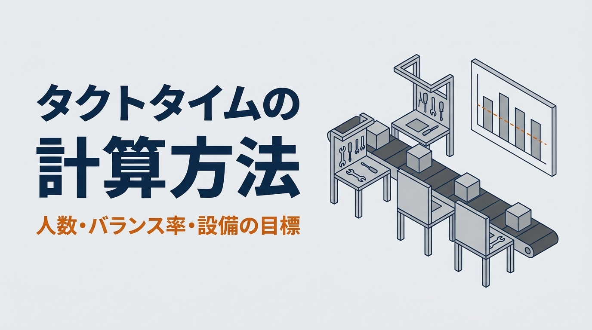

「この設備、何秒で1個作れればいいのか」「ラインには何人いればいいのか」。どちらも、最初に決めるのはタクトタイムです。本記事では、タクトタイムの計算方法を、計算例つきで解説します。計算式と稼働時間の取り方、サイクルタイムやリードタイムとの違い、ラインバランスと必要な人数までを順に扱います。
後半では、設備を設計する立場から、タクトタイムを「設備の目標サイクルタイム」に直し、送る・掴む・加工する・運ぶといった動作ごとの時間に割り振る方法を説明します。条件を入れて試せる計算ツールと、作業を分けて人数を決めるゲームもあります。数値はすべて説明用の例です。
計算例の適用範囲
- 本記事は、1種類の製品を流すラインを例に、タクトタイムと人数、設備のサイクルタイムの基本的な考え方を説明するものです
- 稼働時間、必要数、作業時間、時間稼働率、良品率は、すべて説明用の仮の値です。実際の計画では、自社の生産計画と現場で測った値を使ってください
- 1本のラインで何種類もの製品を作る場合や、段取り替えが多い場合は、本記事の考え方に加えて品種ごとの負荷を確かめてください
この記事でわかること
- タクトタイムの意味と計算式、稼働時間と必要数の取り方
- サイクルタイム・リードタイムとの違いと、タクトタイムとの関係
- 必要な人数とバランス率の求め方
- 時間稼働率と良品率から、設備の目標サイクルタイムを逆算する方法
- 目標サイクルタイムを、設備の動作ごとの時間に割り振る方法
タクトタイムとは｜1個を何秒で作ればよいかの目安
タクトタイムは、決められた稼働時間の中で、必要な数を作り切るために、1個あたりに使ってよい時間です。語源は、音楽の拍子を意味するドイツ語の Takt です。必要な数がそろうペースを、ラインが刻む拍子にたとえた言葉です。
大事なのは、タクトタイムは現場の作業の速さから決まるのではなく、お客様が必要とする数から決まることです。同じラインでも、注文が増えればタクトタイムは短くなり、減れば長くなります。設備や人の能力は、このタクトタイムに合わせて用意します。
この章のまとめ
- タクトタイムは、必要な数を作り切るために、1個あたりに使ってよい時間
- 現場の速さではなく、必要な数から決まる。人と設備はそれに合わせて用意する
タクトタイムの計算式と計算例
タクトタイム ＝ 稼働時間 ÷ 必要数
稼働時間：休憩などを除いた、その期間に生産に使える正味の時間（秒）、必要数：その期間に作る数（個）
式は割り算1つですが、何を稼働時間に入れ、何を必要数とするかで答えが変わります。
稼働時間の取り方
稼働時間は、勤務の時間から、あらかじめ決まっていて作業ができない時間を除いたものです。休憩、朝礼、始業の点検、終業の清掃などがこれにあたります。決まった時刻に行う段取り替えも、計画に入っていれば除きます。
一方、設備の故障や部品の待ちのように、いつ起きるか分からない停止は、本記事ではここで引かず、後で説明する「時間稼働率」で扱います。両方で引くと、同じ停止を二重に数えることになります。計画した保全を稼働時間から引くか、止まった時間として数えるかなど、区分の仕方は会社の管理の基準によって違うので、社内の決まりにそろえます。
必要数の取り方
必要数は、出荷に必要な良品の数を基準にします。月の計画から出す場合は、月の必要数を稼働日の数で割って、1日あたりにします。注文が日によって大きく変わるなら、平均だけでなく、多い日の数でも計算しておきます。
計算例：2直で、1日に1,100個
月に22,000個を、20日で作る組立ラインを考えます。1日の必要数は1,100個です。勤務は1日2直で、1直は8時間（480分）から、休憩30分と、朝礼・始業点検の10分を除いた440分とします。
稼働時間 ＝ 440分 × 2直 ＝ 880分 ＝ 52,800秒
タクトタイム ＝ 52,800 ÷ 1,100 ＝ 48秒
このラインでは、48秒ごとに1個、完成品が出てくれば、1日の必要数がそろいます。
必要数や勤務が変わると
| 1日の必要数 | タクトタイム（2直・880分） |
|---|---|
| 880個 | 60秒 |
| 1,100個 | 48秒 |
| 1,320個 | 40秒 |
| 1,650個 | 32秒 |
必要数が1.5倍になると、タクトタイムは3分の2になります。同じ1,100個を1直だけで作るなら、稼働時間が半分になるので、タクトタイムは24秒です。勤務の組み方は、タクトタイムを決める大きな要素で、人や設備を増やす前に検討できる手段でもあります。
この章のまとめ
- タクトタイム ＝ 稼働時間 ÷ 必要数
- 稼働時間からは、休憩や朝礼など、計画で決まった止まる時間だけを除く
- 計算例では、880分・1日1,100個で48秒。勤務の組み方でも変わる
サイクルタイム・リードタイムとの違い
タクトタイムとよく並べられるのが、サイクルタイムとリードタイムです。名前は似ていますが、決め方も測り方も違います。
| 名前 | 何の時間か | どう決まるか |
|---|---|---|
| タクトタイム | 1個あたりに使ってよい時間 | 稼働時間と必要数から計算する目安 |
| サイクルタイム | 1つの工程や設備が、1個を仕上げるのに実際にかかる時間 | 現場で測る。設備では、次の1個に取りかかれるまでの時間 |
| リードタイム | 着手から完成（または受注から出荷）までにかかる全体の時間 | 加工の時間に、運ぶ時間、待つ時間、検査の時間を足したもの |
サイクルタイムは、同じ工程を何回か測り、ばらつきも見ます。手作業では、作業者や部品の状態で毎回少しずつ変わるので、平均だけでなく、長いほうの値も記録しておきます。設備では、ワークを受け取ってから、次のワークを受け取れる状態になるまでを1サイクルとします。
リードタイムを短くするには、加工を速くするより、工程の間の待ちと仕掛かりを減らすほうが効くことが多いです。タクトタイムとサイクルタイムは「1個あたりの時間」、リードタイムは「1個が通り抜ける時間」と覚えると混同しにくくなります。
この章のまとめ
- タクトタイムは計算で決める目安、サイクルタイムは工程ごとに測る実際の時間
- リードタイムは、待ちや運ぶ時間を含む、着手から完成までの全体の時間
- サイクルタイムは、平均だけでなくばらつきも記録する
タクトタイムとサイクルタイムの関係
タクトタイムとサイクルタイムを比べると、そのラインが必要な数を作れるかどうかが分かります。
- サイクルタイムがタクトタイムより長い工程がある：その工程が間に合わず、後ろの工程は待たされ、前には仕掛かりがたまります。残業や休日の出勤で、足りない分を補うことになります
- すべての工程が、タクトタイムより大幅に短い：必要な数より速く作れますが、作りすぎて在庫が増えるか、人や設備の待ちが生まれます。速ければよい、とは限りません
- すべての工程が、タクトタイムより少し短い：必要な数を、無理なく作れる状態です。ばらつきや小さな停止を吸収できる程度の余裕を残します
比べるときは、サイクルタイムの平均だけでなく、長いほうの値も見ます。平均がタクトタイムより短くても、長い値がたびたび出れば、その都度遅れがたまっていきます。
この章のまとめ
- タクトタイムより長い工程があれば、そこで遅れと仕掛かりが生まれる
- 短すぎるのも、作りすぎや待ちのもとになる。少し短い状態をめざす
必要な人数とバランス率の求め方
手作業のラインでは、タクトタイムから、何人で作業を分ければよいかを考えます。
必要な人数（理論）＝ 作業時間の合計 ÷ タクトタイム（小数点以下は切り上げ）
バランス率（％）＝ 作業時間の合計 ÷（いちばん長い工程の時間 × 人数）× 100
バランス率は、各工程の作業時間がどれだけそろっているかを表します。100％に近いほど、待ちの少ないラインです。
計算例：9つの作業を、タクトタイム48秒で分ける
先ほどの1日1,100個のラインで、次の9つの作業を順番に行うとします。作業の順番は入れ替えられないものとします。
| 作業 | 時間 | 作業 | 時間 |
|---|---|---|---|
| 1 部品をそろえる | 12秒 | 6 カバーを付ける | 15秒 |
| 2 本体を治具に置く | 9秒 | 7 動作を確かめる | 25秒 |
| 3 部品を組み付ける | 19秒 | 8 ラベルを貼る | 11秒 |
| 4 ねじを締める | 17秒 | 9 箱に詰める | 14秒 |
| 5 配線をつなぐ | 20秒 | 合計 | 142秒 |
必要な人数（理論）＝ 142 ÷ 48 ＝ 2.96 → 3人
計算では3人です。ところが、順番を崩さずに3人で分けると、いちばんうまく分けても工程の時間は40秒・52秒・50秒になり、2人がタクトタイムの48秒を超えます。理論の人数は「これより少なくはできない」という下限で、その人数で収まるとは限りません。この3人の分け方でもバランス率は91.0％と高いのですが、いちばん長い工程がタクトタイムを超えている限り、必要な数は作れません。バランス率と、各工程がタクトタイムに収まっているかは、別々に確かめます。
4人で分けると、40秒（作業1〜3）、37秒（作業4・5）、40秒（作業6・7）、25秒（作業8・9）になり、全員がタクトタイムに収まります。
バランス率 ＝ 142 ÷（40 × 4）× 100 ＝ 88.8％
バランスをよくする方法
4人目の工程は25秒で、ほかの工程より手が空きます。この空きを減らすには、まず、いちばん長い工程（ボトルネック）から手を付けます。ほかの工程をいくら速くしても、完成品がラインの最後から出る間隔は、いちばん長い工程が決めるからです。
- 長い作業を2つに分けられないか、前後の工程に移せないかを考える
- 治具や工具を変えて、長い作業そのものを短くする
- 分けられない長い作業は、2人や2台で並べて、交互に受け持つ
- それでも合わないときは、勤務の組み方を変えて、タクトタイムの側を見直す
作業を移すときは、作業の順番の決まり（ねじを締める前にカバーは付けられない、など）を崩さないようにします。
この章のまとめ
- 必要な人数（理論）＝ 作業時間の合計 ÷ タクトタイム。これは下限で、順番の決まりによって1人増えることがある
- 計算例では、理論は3人、実際は4人。バランス率は88.8％
- 改善は、いちばん長い工程から手を付ける
設備の目標サイクルタイムは、タクトタイムより短くする
ここからは、設備を設計する立場で考えます。自動化の装置を入れるとき、「タクトタイムが48秒だから、装置のサイクルタイムも48秒でよい」とすると、多くの場合、必要な数を作れません。設備は、故障や段取りで止まることがあり、小さな停止（チョコ停）や速度の低下もあり、不良品も出るからです。
設備の目標サイクルタイム ＝ タクトタイム × 時間稼働率 × 良品率
時間稼働率：稼働時間のうち、設備が止まらずに動いている時間の割合、良品率：作ったうち良品になる割合
チョコ停や速度の低下（性能のロス）を別に見込む場合は、設備総合効率（OEE）の考え方にならい、性能稼働率も掛けます。本記事では、止まる時間をまとめて見込んだ時間稼働率を85％、良品率を98％とします（仮の値・要確認）。
目標サイクルタイム ＝ 48 × 0.85 × 0.98 ＝ 39.98秒（約40秒）
必要数を良品率で割って「作らなければならない数」を1,122個とし、稼働時間に時間稼働率を掛けた時間で割っても、同じ答えになります。設備の仕様は、タクトタイムの48秒ではなく、約40秒を目標に、ばらつきの分の余裕を持たせて決めます。ちょうど40秒では、計算上わずかに足りないことにも注意します。
なお、トヨタ生産方式の考え方では、設備を動かしたいときに正常に動かせる状態を表す「可動率（べきどうりつ）」と、需要に応じて設備をどれだけ使ったかを表す「稼働率」を区別して扱います。本記事の時間稼働率は、前者に近い意味です。用語や計算の仕方は文献や会社によって違うことがあるので、社内で定義をそろえてから数字を決めます。
同じ停止を二重に引かない
計画した段取り替えを稼働時間から引いたなら、その時間は時間稼働率には入れません。たとえば、1直30分の段取り替えを稼働時間から引き、さらに時間稼働率の中にも含めて計算すると、目標は約37.3秒になり、40秒より2.7秒厳しくなります。厳しすぎる目標は、装置を必要以上に速く、高くします。何を稼働時間で引き、何を時間稼働率で見込んだかを、計算書に書いておきます。
この章のまとめ
- 設備の目標サイクルタイム ＝ タクトタイム × 時間稼働率 × 良品率（性能のロスを別に見込むなら性能稼働率も掛ける）
- 計算例では、48秒が約40秒になる。設備の仕様は、余裕を持たせて決める
- 計画した停止は、稼働時間か時間稼働率のどちらか一方でだけ扱う
目標サイクルタイムを、設備の動作ごとに割り振る
目標の40秒が決まったら、装置の動作ごとに時間を割り振ります。ワークをコンベアで送り、シリンダで押さえ（クランプ）、加工し、真空パッドで取り出して次の工程へ運ぶ装置を例にします。
| 動作 | 時間 | 見積もりの考え方 |
|---|---|---|
| ワークを送る（コンベア） | 3.0秒 | 300mmを0.15m/sで送る2.0秒に、加減速と位置決めの1.0秒を足す |
| 位置決め・クランプ（シリンダ） | 0.8秒 | ストローク50mmを平均100mm/sで0.5秒、弁の切り替えとセンサの確認に0.3秒 |
| 加工 | 28.0秒 | 加工の条件から決まる時間 |
| アンクランプ | 0.6秒 | シリンダが戻り、センサで確かめるまで |
| 取り出し・吸着（真空パッド） | 2.0秒 | ハンドが下りて吸い、真空が届いたことを確かめる0.5秒を含む |
| 次の工程へ運ぶ | 4.0秒 | 運んで置き、真空を切るまで |
| ハンドが戻る | 3.0秒 | 取り出しの位置まで戻る |
全部を順番に行うと 3.0 ＋ 0.8 ＋ 28.0 ＋ 0.6 ＋ 2.0 ＋ 4.0 ＋ 3.0 ＝ 41.4秒 → 目標の40秒を1.4秒超える
ここで、ハンドが「運ぶ・戻る」（7.0秒）の間に、次のワークの送りとクランプ、加工を始めるようにします。ハンドは加工が終わる前に戻ってこられるので、この7.0秒はサイクルタイムから外れます。
重ねた場合 3.0 ＋ 0.8 ＋ 28.0 ＋ 0.6 ＋ 2.0 ＝ 34.4秒（目標の40秒に5.6秒の余裕）
重ねられるのは、互いにぶつからず、順番の決まりや安全のための確認の待ちもない動作です。ハンドと次のワークの送りが同じ場所を通るなら、ぶつからないようにセンサで確かめる時間が要ります。重ねた動作のどちらかが遅れたときに、装置がどう待つかも決めておきます。
動作の時間は、速さの最大値だけで見積もると短くなりすぎます。シリンダは弁が切り替わってから動き出すまでの遅れ、コンベアは加減速、真空パッドは真空が届くまでの時間があります。シリンダの速さは、負荷や供給の圧力、速さの調整でも変わります。真空が届くまでの時間は、パッドと配管の容積、真空を作る機器の能力、漏れで変わります。このほか、センサの応答、制御の処理、安全のための確認（インターロック）の時間や、ワークの位置ずれで取り直す時間も見込みます。それぞれの見積もり方は「エアシリンダの選定計算」「コンベアのモーター選定」「真空パッドの選定計算」で扱っています。表の値は計画のための見積もりなので、試作や実機で測って確かめます。
また、いちばん長い動作が目標を超えるなら、重ねても解決しません。計算例で加工が40秒を超えるなら、加工の条件を見直すか、加工する場所を2つにして交互に使う、といった方法を考えます。
この章のまとめ
- 目標サイクルタイムを、動作ごとの時間に割り振り、タイムチャートで確かめる
- 計算例では、順番に行うと41.4秒。運ぶ・戻るを重ねて34.4秒になった
- 動作の時間には、弁の遅れ、加減速、真空が届くまでの時間を含める
自分の条件で試す｜タクトタイムとラインバランスの計算ツール
稼働時間、必要数、時間稼働率、良品率を入れると、タクトタイムと設備の目標サイクルタイムが出ます。工程ごとの時間を入れると、棒グラフにタクトタイムの線を重ねて、バランス率といちばん長い工程を示します。初期値は、本記事の計算例と同じです。
タクトタイムと、工程ごとの時間のバランス
タクトタイムは「稼働時間 ÷ 必要数」、設備の目標サイクルタイムは「タクトタイム × 時間稼働率 × 良品率」で概算します。チョコ停や速度の低下（性能のロス）を別に見込む場合は、その分も時間稼働率に含めて入れてください。稼働時間には、休憩や朝礼など、計画で決まった止まる時間を除いた時間を入れます。計画した段取り替えを稼働時間から引いた場合は、その分を時間稼働率に入れないでください。工程ごとの時間は、現場で測った値（できれば長いほうの値）を入れます。バランス率は「工程の時間の合計 ÷（いちばん長い工程の時間 × 工程の数）」です。結果は目安で、ラインや設備の能力を保証するものではありません。多くの品種を流す場合や、段取り替えが多い場合は、品種ごとの負荷も確かめてください。
タクトタイム
1日の直の数
| 稼働時間（1日） | 分 |
|---|---|
| タクトタイム | 秒 |
| 設備の目標サイクルタイム（時間稼働率・良品率込み） | 秒 |
工程ごとの時間
工程（人・設備）の数
結果
| 工程の時間の合計 | 秒 |
|---|---|
| 必要な人数・台数（理論の下限） | （） |
| いちばん長い工程 | |
| 判定 | |
| バランス率 | ％ |
実際の設備での計算・選定の確認は、オンラインでお引き受けします（全国対応）。料金の目安相談する ›
やってみよう｜タクトに間に合わせろ！ライン分けゲーム
8つの作業を、順番を変えずに何人かで分けます。作業の時間とタクトタイムは、毎回変わります。作業と作業の間をクリックすると、そこで次の人に交代します。スタートを押すと、タクトタイムごとに製品が流れてきます。タクトを超える人の前には、製品がたまっていきます。全員をタクトに収め、できるだけ少ない人数で回せばクリアです。
ライン分けゲーム
タクトタイム 秒（作業の合計 秒）
作業（左から順番。間の「｜」を押すと、そこで次の人に交代）
製品は、タクトタイムごとに1個ずつ流れてきます。1人が受け持つ時間は、受け持つ作業の時間の合計です。前の人から受け取り、自分の作業が終わって手が空いていれば、すぐに次の製品に取りかかります。いちばん少ない人数は、作業を前から順に、タクトを超えない範囲で詰めていく分け方で求めています。運ぶ時間や作業のばらつきは入れていません。
タクトタイムの計算でよくある失敗
休憩や朝礼を引かずに計算する
計算例で勤務の8時間をそのまま使うと、タクトタイムは約52.4秒になります。休憩中も作れる前提になるので、必要なペースを約4秒ゆるく見積もることになり、その目標で組んだラインでは、毎日1,100個に届きません。
サイクルタイムの平均だけで比べる
平均は45秒でも、ときどき55秒かかる工程があれば、そのたびに遅れがたまります。測った値の長いほうも見て、なぜ長くなったかを確かめます。
設備の動作を、全部足し算で見積もる
全部の動作を順番に足すと、装置の仕様が必要以上に厳しくなり、速いシリンダや大きなモーターを選んでしまいます。同時にできる動作を、タイムチャートで先に整理します。
この章のまとめ
- 稼働時間から、計画で決まった止まる時間を引く
- サイクルタイムは、平均だけでなく長いほうの値も見る
- 設備の動作は、足し算の前にタイムチャートで重ね方を考える
タクトタイムの計算でよくある質問
何種類もの製品を1本のラインで作るときは、どう計算しますか
まず、全品種の必要数を合計して、共通のタクトタイムを出します。そのうえで、品種ごとのサイクルタイムを比べ、時間のかかる品種が続くと遅れがたまらないか、流す順番で平均できないかを確かめます。段取り替えの時間を稼働時間で引くか、時間稼働率で見込むかも決めておきます。
タクトタイムは、短いほうがよいのですか
タクトタイムは必要な数から決まる目安なので、短ければ短いほどよい、とは言えません。求められる数を上回る速さのラインは、在庫や待ちを生みます。目標は、タクトタイムに合わせて、必要な数をむだなく作ることです。
まとめ
タクトタイムは「稼働時間 ÷ 必要数」で求め、1個あたりに使ってよい時間を表します。計算例では、880分で1日1,100個を作るラインで48秒でした。手作業のラインでは、作業時間の合計から必要な人数を出し、順番の決まりを守って作業を分け、バランス率で確かめます。
設備では、タクトタイムに時間稼働率と良品率を掛けて、目標サイクルタイムを決めることが出発点です。そのうえで、動作ごとに時間を割り振り、同時にできる動作をタイムチャートで重ねます。まずは計算ツールで自社の条件を入れ、ゲームで作業の分け方を試してみてください。
参考
・生産管理・工程設計の一般的な考え方（タクトタイム、サイクルタイム、リードタイム、ラインバランス）
・トヨタ生産方式の用語（可動率と稼働率）、設備総合効率（時間稼働率・性能稼働率・良品率）
・動作の時間の見積もりは、本シリーズのエアシリンダ、コンベア、真空パッドの記事を参照